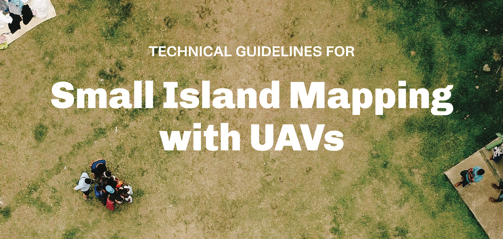

Executive Summary
Image acquisition and surveying using unmanned aerial vehicles (UAVs) is a very promising technology for Small Island Developing States (SIDS). UAVs can be a relatively low-cost data collection tool at the surveying scales often needed in small island contexts. Further, UAVs can capture thousands of images in a single flight and provide greater detail than satellites or even manned aircraft. The World Bank and Humanitarian OpenStreetMap Team (HOT) compiled this guidance note to document experience and best practices in the use and operation of UAVs for economic development in SIDS. Many of the lessons presented in this guidance note stem from the UAV4Resilience organized by the World Bank (World Bank 2017b) and from experiences with Pacific Drone Imagery Dashboard (PacDID) deployments in the Pacific islands (HOT 2016). This report is intended for local technological agencies of island nations that work to operationalize UAVs as a standard data collection tool.
The report offers the following key messages:
- UAVs can be used to collect information for disaster risk reduction and response. For both these tasks, it is vitally important that high-quality baseline data be collected and made available before a disaster strikes as part of preparedness and capacity-building work (page 39).
- Platforms that are suitable for the mapping needs and local conditions in small island states should be selected, if the budget permits, several platforms can be used for various specialized tasks (page 16).
- Flying the UAV is only a very small portion of the time needed. Most of the time required is taken up by planning, obtaining permission to fly, and post-processing of the data captured (page 20).
- To ensure safety during flying operations, regulations and air traffic control procedures need to be clear and understood and must be rehearsed before emergency conditions arise (page 10).
- To expedite licensing and regulatory processes and reduce costs, it helps to use local service providers that specialize in the mapping areas of interest within the country. Capacity building of in-country actors ensures that needed skill sets are available on short notice (page 37).
- Power and battery management for UAVs and for ground control stations can be a challenge in the field if not planned thoroughly in advance of activities (page 36).